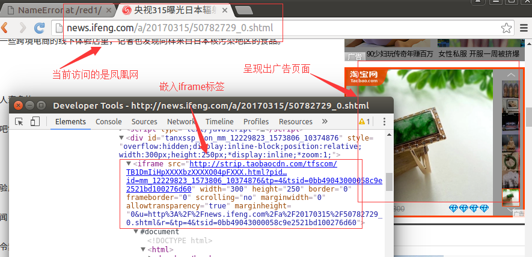
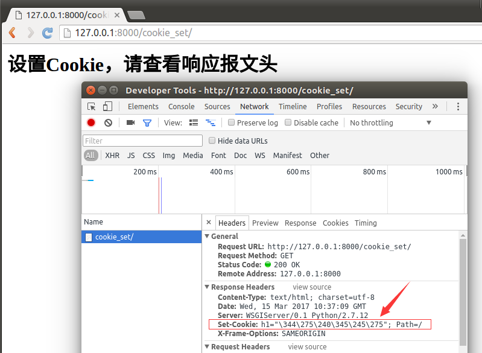
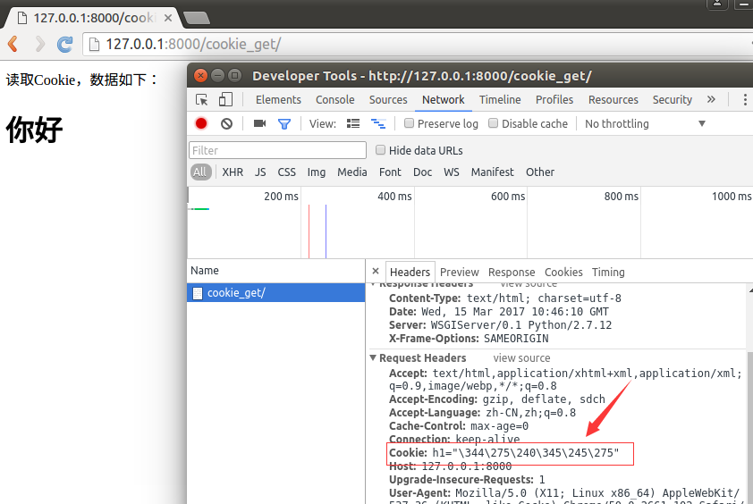

Cookie
Cookie，有时也用其复数形式Cookies，指某些网站为了辨别用户身份、进行session跟踪而储存在用户本地终端上的数据（通常经过加密）。Cookie最早是网景公司的前雇员Lou Montulli在1993年3月的发明。Cookie是由服务器端生成，发送给User-Agent（一般是浏览器），浏览器会将Cookie的key/value保存到某个目录下的文本文件内，下次请求同一网站时就发送该Cookie给服务器（前提是浏览器设置为启用cookie）。Cookie名称和值可以由服务器端开发自己定义，这样服务器可以知道该用户是否是合法用户以及是否需要重新登录等。服务器可以利用Cookies包含信息的任意性来筛选并经常性维护这些信息，以判断在HTTP传输中的状态。Cookies最典型记住用户名。
Cookie是存储在浏览器中的一段纯文本信息，建议不要存储敏感信息如密码，因为电脑上的浏览器可能被其它人使用。
Cookie的特点
- Cookie以键值对的格式进行信息的存储。
- Cookie基于域名安全，不同域名的Cookie是不能互相访问的，如访问itcast.cn时向浏览器中写了Cookie信息，使用同一浏览器访问baidu.com时，无法访问到itcast.cn写的Cookie信息。
- 当浏览器请求某网站时，会将浏览器存储的跟网站相关的所有Cookie信息提交给网站服务器。
典型应用：记住用户名，网站的广告推送。
说明：点击示例网址，这些广告推送的商品是基于你曾经在淘宝上点击的商品类别等条件筛选出来的，看上去这是在凤凰网上访问淘宝网的Cookie，但是事实不是这样的，一般是采用iframe标签嵌套一个淘宝的广告页面到凤凰网的页面上，所以淘宝的Cookie并没有被凤凰网读取到，而是依然交给淘宝网读取的，可以通过"开发者工具"查看元素，如下图：

接下来讲解如何在Django中实现Cookie的读写。
设置Cookie
1）打开booktest/views.py文件，创建视图cookie_set。
def cookie_set(request):
response = HttpResponse("<h1>设置Cookie，请查看响应报文头</h1>")
response.set_cookie('h1', '你好')
return response
2）打开booktest/urls.py文件，配置url。
url(r'^cookie_set/$',views.cookie_set),
3）在浏览器输入如下网址。
http://127.0.0.1:8000/cookie_set/
在"开发者工具"中可以在响应头中查看到设置的Cookie信息。

读取Cookie
Cookie信息被包含在请求头中，使用request对象的COOKIES属性访问。
1）打开booktest/views.py文件，创建视图cookie_get。
def cookie_get(request):
response = HttpResponse("读取Cookie，数据如下：<br>")
if 'h1' in request.COOKIES:
response.write('<h1>' + request.COOKIES['h1'] + '</h1>')
return response
2）打开booktest/urls.py文件，配置url。
url(r'^cookie_get/$',views.cookie_get),
3）在浏览器输入如下网址。
http://127.0.0.1:8000/cookie_get/
4）打开“开发者工具”，在请求头中可以查看Cookie信息，浏览效果如下图：
